Step-by-step setup, media installation, and troubleshooting for the Zebra ZT411R and Zebra ZD621R RFID label printers.
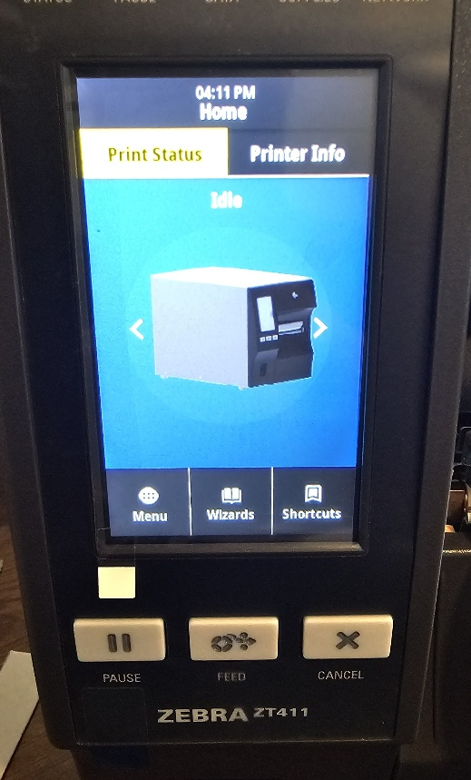
ZT411R home screen — press MENU to access settings.
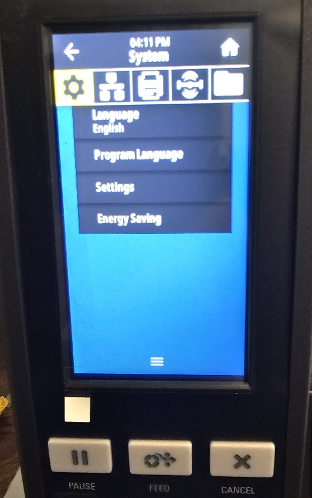
System menu — select Settings.
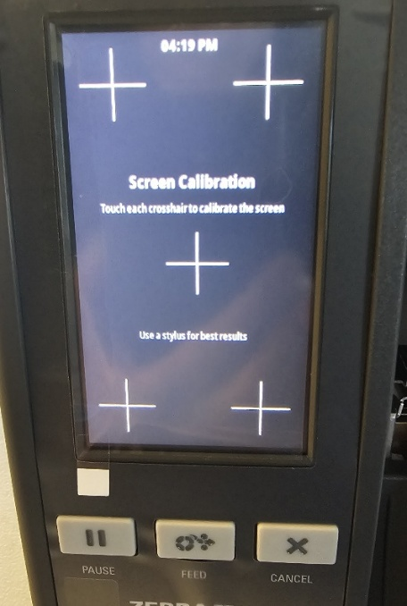
Screen Calibration — touch each of the five crosshairs precisely. A stylus gives the best results. Repeat if touches still feel inaccurate.
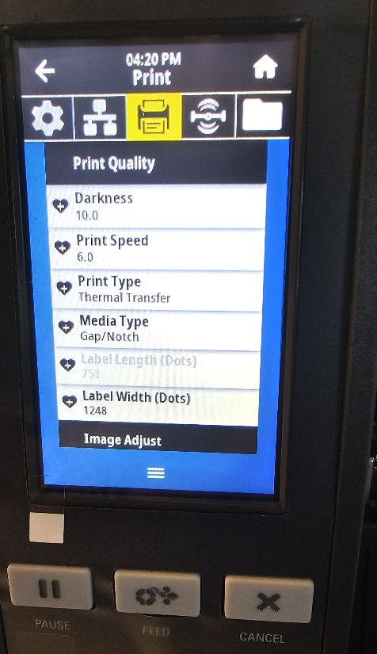
Print Quality — set Darkness, Print Speed, Print Type, Media Type. Scroll down and tap Image Adjust.
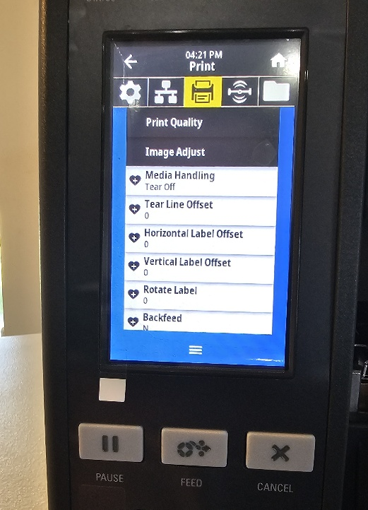
Image Adjust — set Media Handling to Tear Off, Rotate Label to 0, Backfeed to N.
Install the small cardboard tube on the top ribbon spindle. Ensure the notch in the gear on the left aligns with the cut-out on the tube.
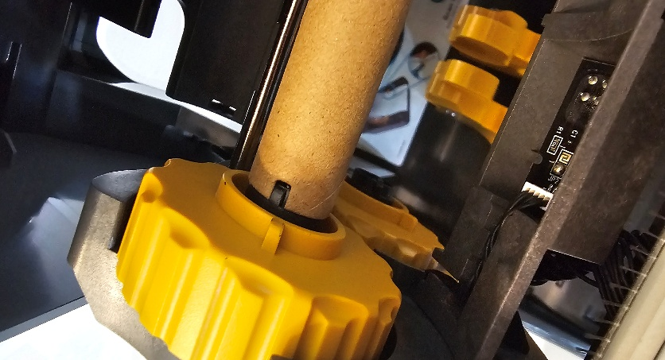
Cardboard tube on the top spindle — the notch in the yellow gear (left side) aligns with the cut-out in the tube before seating it fully.
Open the ribbon roll and install it on the rear tube. Pull the ribbon forward and wrap it around the front tube, winding it several times until tight and not slipping.
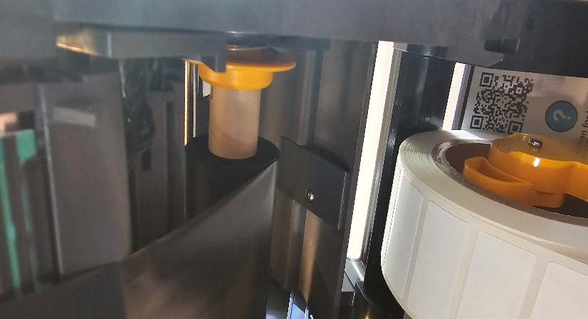
Ribbon threaded from the rear supply roll, wrapped snugly around the front take-up tube. Keep the ribbon aligned with the rear tube throughout.
Load the media roll labels facing up. Center the Gap Sensor over the label. For flag-tag material, slide the sensor left or right as needed. Thread labels under the alignment notches until at least one label extends out. Close the top — the printer auto-calibrates.
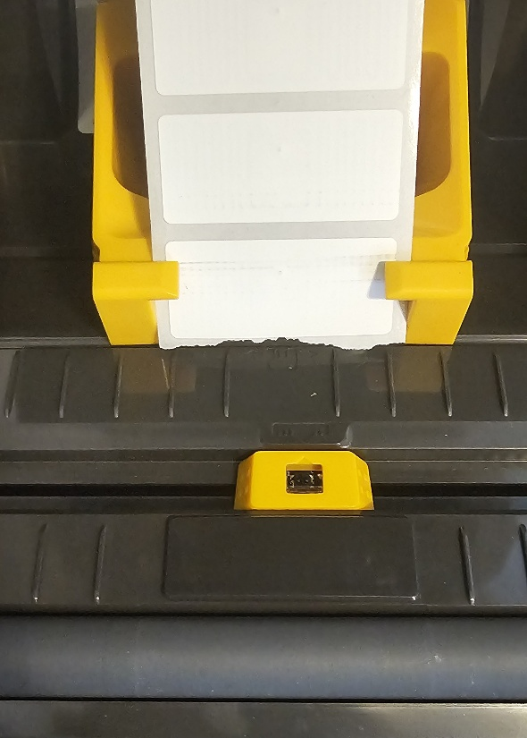
Gap sensor (yellow) centered on the label stock. Labels face up, at least one label extends beyond the printer before closing the cover.
MENU › Settings › Media Calibrate.Release the print head by pulling the release lever to the rear.
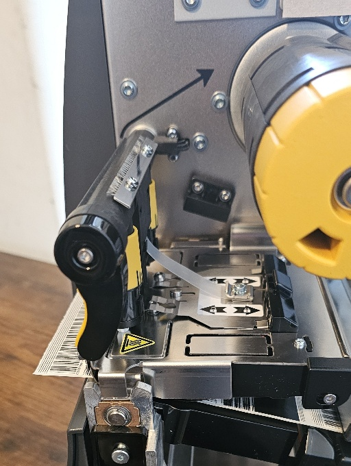
Release lever (black handle, left side) pulled to the rear — opens the print head for ribbon threading.
Slide the ribbon roll onto the top back roller.
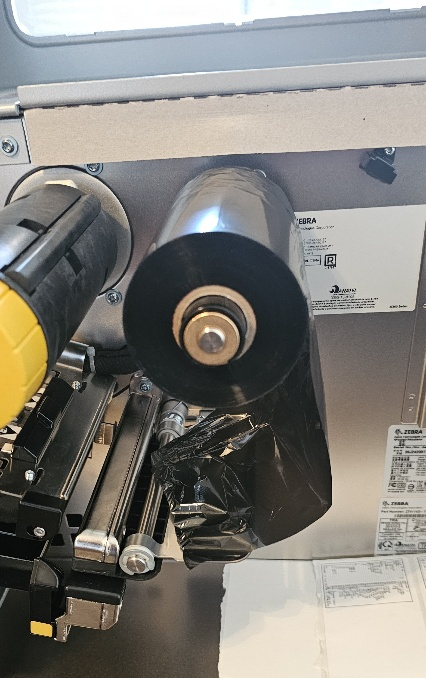
Ribbon roll on the top back roller. Follow the direction arrow printed inside the printer cabinet.
Thread the ribbon under the print head, over the front top roller, then wrap it around the top middle roller several times until it no longer slips.
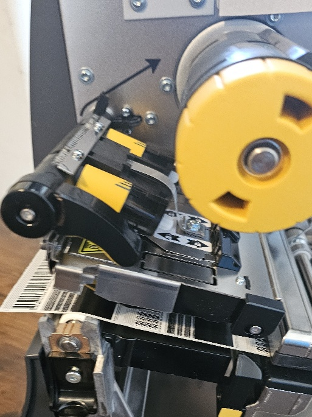
Ribbon wrapped snugly around the top middle roller. Close the print head then the door after loading media.
Install the media roll labels up on the lower metal rail. Slide it all the way back, then push the peg against the roll.
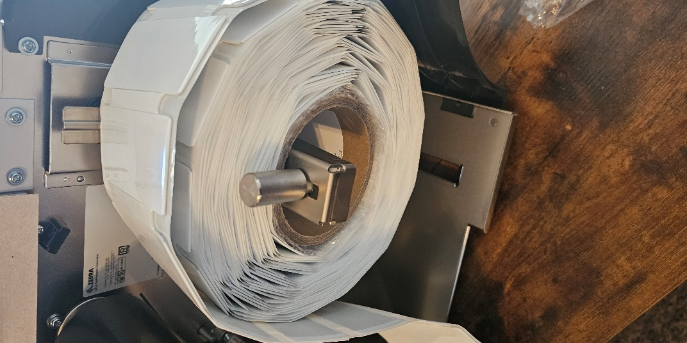
Media roll on the lower rail, slid all the way back. Peg pushed flush against the roll to hold it in place.
Pull media forward, under the guide rail and print head. Adjust the gap sensor left or right to line it up with the gap between labels.
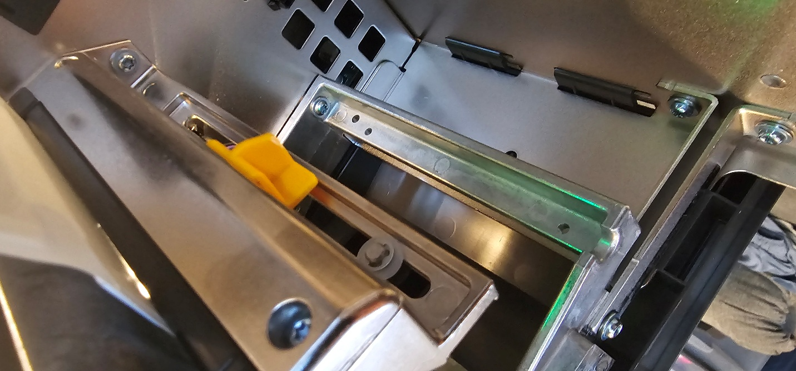
Gap sensor aligned over the label gap — the green LED confirms correct detection. Close the print head then the door; auto-calibration begins automatically.
MENU › Connections, select your connection type, and follow the on-screen steps.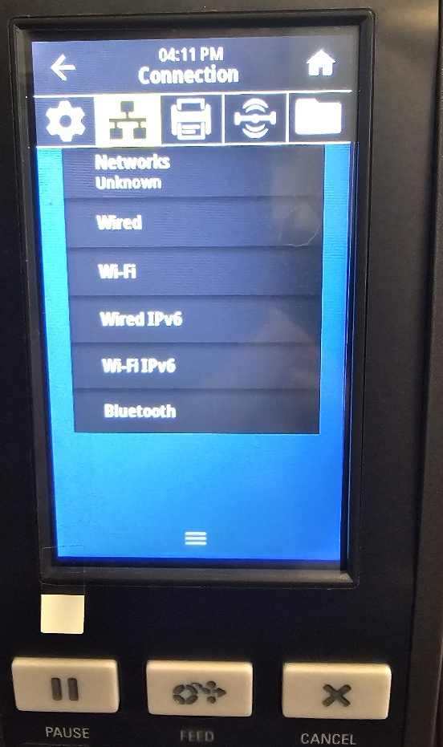
Connection menu — choose Wired, Wi-Fi, Wired IPv6, Wi-Fi IPv6, or Bluetooth depending on your site configuration.
| # | Check | Action |
|---|---|---|
| 1 | Printer power | Confirm the printer is powered on and the display is active. |
| 2 | Correct printer selected | In iDash or BarTender, verify the correct printer name / IP is targeted for this job. |
| 3 | Clear printer cache | In Windows, open Devices and Printers, right-click the printer › See what's printing, then cancel all documents. |
| 4 | Network connectivity | Ping the printer IP or check connection status on its touch screen. |
MENU › Printer Icon › Image Adjust › Vertical Label Offset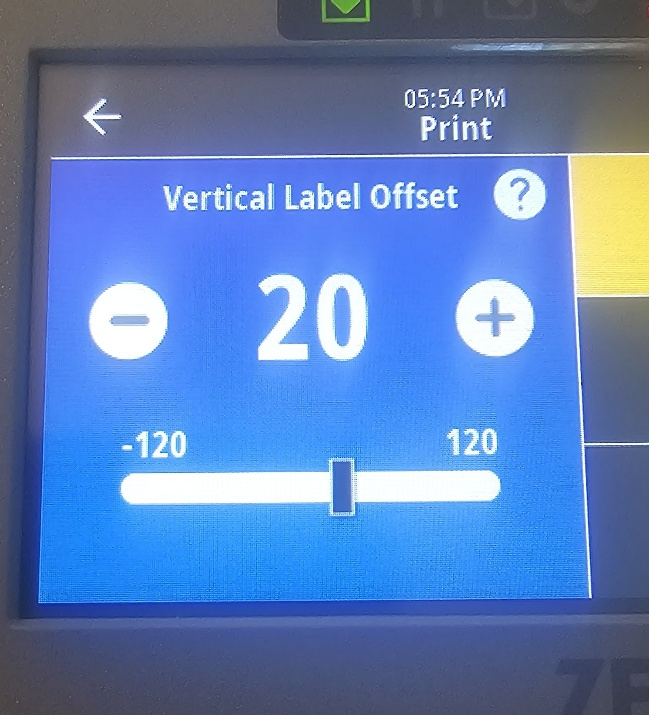
Vertical Label Offset — adjust until the print is centered vertically on the label.
| Button | Effect |
|---|---|
| − Minus | Moves the printing area up |
| + Plus | Moves the printing area down |
MENU › Printer Icon › Image Adjust › Horizontal Label Offset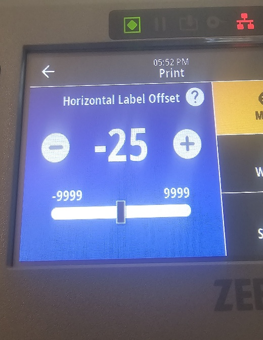
Horizontal Label Offset — adjust until the print is centered horizontally on the label.
| Button | Effect |
|---|---|
| − Minus | Moves the printing area to the right |
| + Plus | Moves the printing area to the left |
MENU › Printer Icon › Image Adjust › Tear Line Offset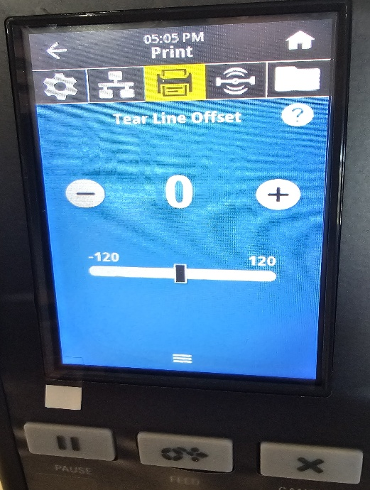
Tear Line Offset — negative pulls the label into the printer (earlier tear), positive pushes outward (later tear).
| Direction | Effect |
|---|---|
| − Negative | Pulls the label into the printer (earlier tear) |
| + Positive | Pushes the label outward (later tear) |
Adjust so there is little to no gap between the printed tag and the tear bar.
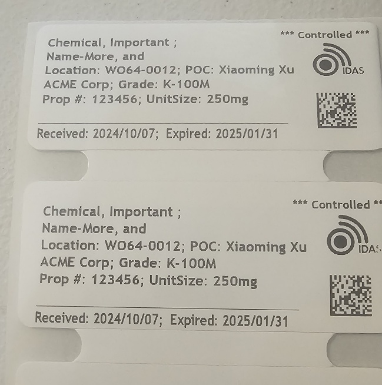
Proper ZD621R result: little to no gap between the label and the tear bar.
Adjust to line the label up with the tear-off bar (green arrow).
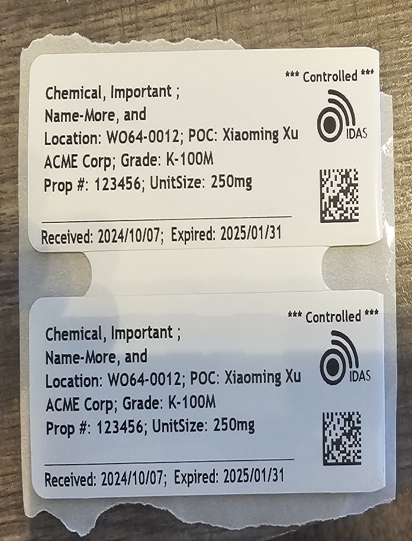
Proper ZT411R result: label aligned with the tear-off bar (green arrow on the tear strip).
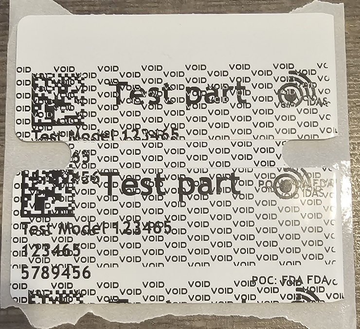
VOID-marked labels — the printer covers the entire label with a VOID pattern when RFID encoding fails. Discard these labels — do not attempt to scan them.
1. Check media calibration first. If the VOID print is off-center, the issue is media — not RFID. Go to Section 2 and re-calibrate media. If print is centered, proceed to step 2.
2. Run RFID Calibration. Select the RFID icon tab, then tap RFID › RFID Calibrate.
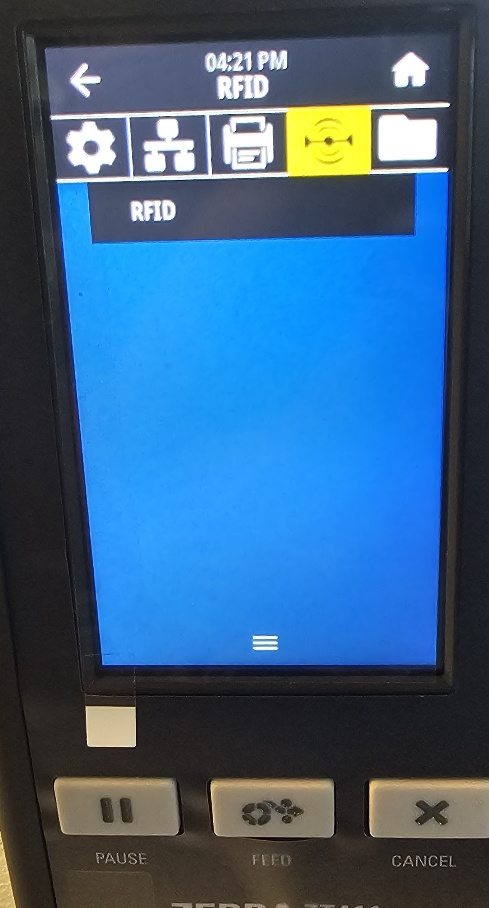
Tap the RFID icon (highlighted yellow) in the top menu tab bar.
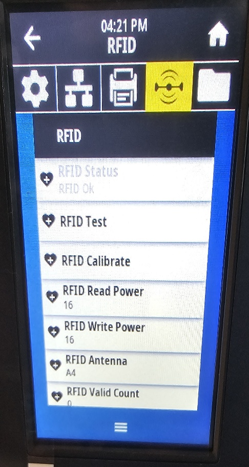
RFID menu — select RFID Calibrate. Note the Write Power value for step 3.
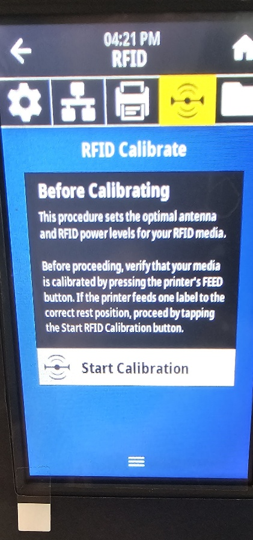
RFID Calibrate screen — read the instructions, press Start Calibration. Allow several minutes for the process to complete fully.
3. If VOIDs persist after RFID calibration, reduce RFID Write Power (shown in the RFID menu above). Excessive write power causes encoding errors on some tag types.
4. If the problem continues, verify the data sent to the label template is correct and complete. A missing or malformed field in the ZPL template causes the printer to void the tag.
| Setting / Action | Menu Path |
|---|---|
| Screen Calibration | MENU › Settings › Screen Calibration |
| Password Level / Power Up / Head Close | MENU › Settings |
| Darkness / Print Speed / Print Type / Media Type | MENU › Printer Icon › Print Quality |
| Media Handling / Rotate / Backfeed | MENU › Printer Icon › Image Adjust |
| Vertical Label Offset | MENU › Printer Icon › Image Adjust › Vertical Label Offset |
| Horizontal Label Offset | MENU › Printer Icon › Image Adjust › Horizontal Label Offset |
| Tear Line Offset | MENU › Printer Icon › Image Adjust › Tear Line Offset |
| RFID Calibration | MENU › RFID Icon › RFID › RFID Calibrate |
| RFID Write Power | MENU › RFID Icon › RFID › RFID Write Power |
| Network Connection Setup | MENU › Connections › [Connection Type] |
| Manual Media Calibration | MENU › Settings › Media Calibrate |
| Issue | Likely Cause | Resolution |
|---|---|---|
| Printer does not print | Power, wrong printer, cache, or network | 4-step checklist in Section 3, Step 4. |
| VOID + off-center print | Media not calibrated | Re-run media installation and calibration per Section 2. |
| VOID + centered print | RFID encoding error | Run RFID Calibration. If it persists, lower RFID Write Power. |
| Print too light or too dark | Incorrect Darkness value | ZT411R = 25, ZD621R = 20. Adjust in Print Quality. |
| Print shifted up or down | Vertical Label Offset | Image Adjust › Vertical Label Offset — minus = up, plus = down. |
| Print shifted left or right | Horizontal Label Offset | Image Adjust › Horizontal Label Offset — minus = right, plus = left. |
| Tag tears at wrong position | Tear Line Offset not set | ZD621R: little/no gap at tear bar. ZT411R: align with green arrow. |
| Auto calibration fails | Gap sensor misaligned or media not seated | Center sensor on label gap, re-seat media, run Manual Media Calibrate. |
| Ribbon slipping / not advancing | Ribbon not wrapped tightly | Re-install ribbon, wrapping take-up end multiple times until snug. |